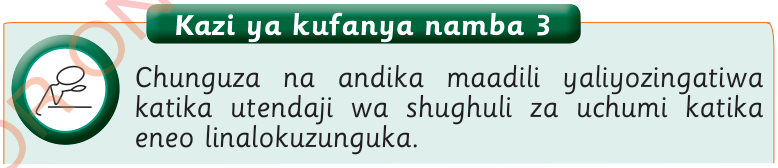

Kazi ya kufanya namba 4

Orodhesha mambo uliyojifunza kuhusu maadili katika kudumisha maarifa na ujuzi wa asili wa jamii.

Orodhesha mambo uliyojifunza kuhusu maadili katika kudumisha maarifa na ujuzi wa asili wa jamii.